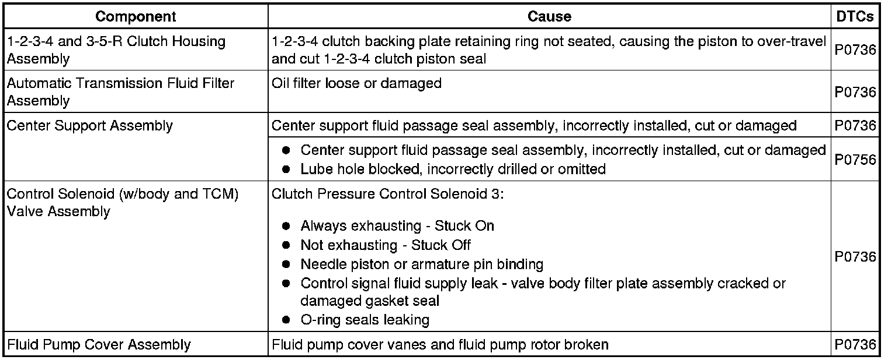

P0736
DTC P0736
Diagnostic Instructions
* Perform the Diagnostic System Check - Vehicle (Initial Inspection and Diagnostic Overview) prior to using this diagnostic procedure.
* Review Strategy Based Diagnosis (Initial Inspection and Diagnostic Overview) for an overview of the diagnostic approach.
* Diagnostic Procedure Instructions (Initial Inspection and Diagnostic Overview) provides an overview of each diagnostic category.
DTC Descriptor
DTC P0736
- Incorrect Reverse Ratio
Diagnostic Fault Information
The following fault table will help determine if a hydraulic circuit or an incorrect position or application of a component affects the transmission operation.

Circuit/System Description
The clutch pressure control (PC) solenoid 2 flows fluid to the 3-5-R clutch when commanded off and exhausts fluid when commanded on. The clutch PC solenoid 2 regulates the transmission fluid pressure to the 3-5-R clutch. The transmission fluid pressure (TFP) switch 1 opens (high) under fluid pressure and closes (low) when no pressure is present. The transmission control module (TCM) calculates gear ratio based on data from the automatic transmission input speed sensor (ISS) and the output speed sensor (OSS). The TCM compares the known transmission gear ratio to a calculated gear ratio for each commanded gear.
Conditions for Running the DTC
* 3-5-R clutch is the primary on-coming clutch.
* The commanded gear is Reverse.
Conditions for Setting the DTC
TFP Switch 1 = Low (No fluid pressure)
Action Taken When the DTC Sets
DTC P0736 is a Type A DTC.
Conditions for Clearing the DTC
DTC P0736 is a Type A DTC.
Diagnostic Aids
When attempting to set transmission performance DTCs, observe the Freeze Frame and Failure Records to assist in duplicating the failure conditions. Ensure the transmission fluid level is correct and there are no leaks. If there are any other transmission DTCs set, diagnose those first.
Reference Information
Schematic Reference
Reverse (Reverse)
Connector End View Reference
Component Connector End Views (Connector Views)
Electrical Information Reference
* Circuit Testing (Component Tests and General Diagnostics)
* Connector Repairs (Component Tests and General Diagnostics)
* Testing for Intermittent Conditions and Poor Connections (Component Tests and General Diagnostics)
* Wiring Repairs (Component Tests and General Diagnostics)
Description and Operation
Reverse (Reverse)
DTC Type Reference
Powertrain Diagnostic Trouble Code (DTC) Type Definitions (Diagnostic Trouble Code Descriptions)
Scan Tool Reference
Control Module References (Programming and Relearning) for scan tool information
Circuit/System Verification
1. Operate the vehicle to induce a shift from second to third gear while observing TFP Switch 1. Perform this action 2 times. The TFP Switch 1 should change states from Low to High.
• If the TFP Switch does not change states and no other DTCs set, replace the control solenoid (w/body and TCM) valve assembly.
• If any other DTCs set, diagnose that DTC first.
2. Operate the vehicle to obtain sixth gear 2 times and then check for DTCs other than DTC P0736.
• If any other DTCs set, diagnose that DTC first.
• If no other DTC sets, continue on with diagnostics.
3. Operate the vehicle by shifting from Park to Reverse, then while in reverse, operate the vehicle with the calculated throttle position greater than 8 percent for 5 seconds, perform this maneuver a minimum of 3 times.
• If the DTC P0736 resets, go to Component Testing.
Component Testing
1. Perform the Line Pressure Check (Line Pressure Check) .
2. Inspect the check ball 5 for possible sticking or damage.
• If you found a concern with this check ball, repair the concern.
3. Inspect the shift select valve 3 for sticking or damage.
• If you found a concern with the shift select valve 3, repair or replace the valve or valve body.
4. Inspect the low and reverse clutch assembly for wear or damage.
• If you found a low and reverse clutch assembly concern, repair or replace the low and reverse clutch assembly as necessary.
Repair Instructions
Perform the Diagnostic Repair Verification (Verification Tests) after completing the diagnostic procedure.
* Control solenoid (w/body and TCM) valve assembly. Refer to Control Module References (Programming and Relearning) for replacement, setup, or programming.
* Low and reverse clutch assembly replacement. Refer to Low and Reverse Clutch Overhaul (6L50) (Overhaul) .
* Lower valve body assembly. Refer to Control Valve Lower Body and Upper Body Replacement (Service and Repair) .
• Perform the valve body inspection procedure, refer to Control Valve Upper Body Assembly Cleaning and Inspection (Overhaul) . If the inspection procedure indicates to replace the valve body, refer to Control Valve Lower Body and Upper Body Replacement (Service and Repair) .
* Perform the Service Fast Learn Adapts (Programming and Relearning) .